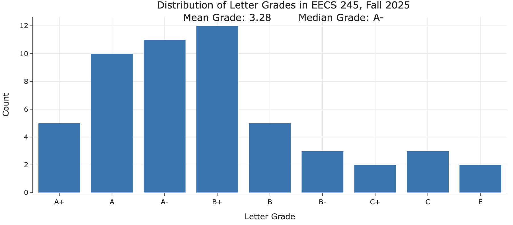
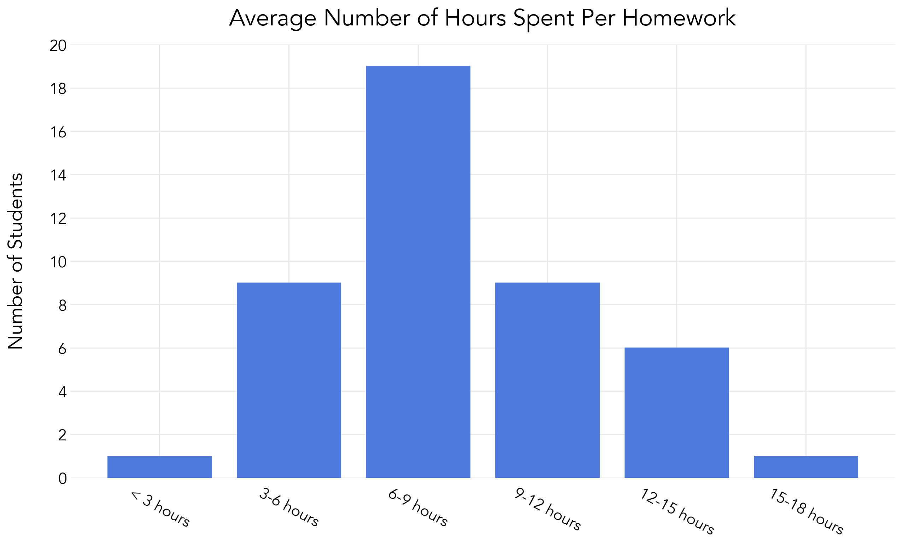

Click here to see the Winter 2026 course website.
Mathematics for Machine Learning 🧠
EECS 245 at the University of Michigan
Are you a computer science, data science, or statistics major who needs to take a linear algebra course and is interested in machine learning? Take EECS 245 in Fall 2026, or the Spring 2026 half term!
- Content
- Credit
- Prerequisites
- Workload and Final Grade Distribution
- Course Evaluations
- Logistics
- Questions?
Content
Click to see the official catalog description.
Mathematical foundations of machine learning and artificial intelligence, focusing primarily on linear algebra, along with select topics from calculus and probability. Topics include matrices, vectors, projections, spans, least squares, and eigenvalue and eigenvector problems. Includes mathematical theory as well as application to concrete data sets in a modern programming language.Check out the current course website at eecs245.org, which contains links to our interactive course notes, lecture recordings, homeworks, labs, and exams.
Credit
The course counts for:
- The linear algebra requirement for:
- Computer Science majors (CS-Eng and CS-LSA*).
- Data Science majors (DS-Eng and DS-LSA).
- Statistics majors.
- Artificial Intelligence minors.
- The linear algebra prerequisite for:
- EECS 442, EECS 445, EECS 448, EECS 474, EECS 476, and CSE 576.
- Any 400-level STATS or DATASCI course with a linear algebra prerequisite.
*CS-LSA students don’t have a linear algebra requirement, but this course fits in the linear algebra “bucket” for the second math course; see here for details.
Prerequisites
This course has a math prerequisite and a programming prerequisite.
- EECS 203 or Math 116 (or Math 215, 216, 275, 285, or 295), i.e. some math course after Calculus 1.
- Some 100-level programming class (e.g. EECS 183, ENGR 101, ROB 102, or similar).
Workload and Final Grade Distribution
Here is distribution of letter grades earned in Fall 2025. We expect the distribution to be similar in Winter 2026.

This course has 11 weekly homeworks, weekly in-person labs, 2 non-cumulative midterm exams, and a cumulative final exam, which allows you to get back some of the points you lost on the midterms.
We surveyed Fall 2025 students to get a rough sense of the amount of time they spent on each homework.

Our target is that the course takes a similar amount of time per week as EECS 203.
Course Evaluations
You can find the official end-of-semester course evaluations from Fall 2025 here.
Logistics
In both terms:
- Lectures are in-person and recorded. Attendance is not required, though we might offer extra credit or an alternative grading scheme for students who attend lectures regularly.
- Labs are in-person and attendance is 10% of your grade.
- There are 2 midterm exams and a cumulative final exam, with an opportunity to “redeem” lower scores on the midterms by doing better on the final (see the current syllabus for more details).
Questions?
If you have any questions about the course, don’t hesitate to contact Suraj Rampure at rampure@umich.edu. I’m happy to meet with students 1-on-1 to answer any questions they may have about the course.